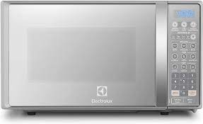
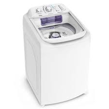
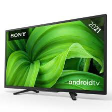

GELADEIRA electrolux : Qual é o consumo mensal de uma geladeira o consumo mensal é de 35,3 kWh. itle
Geladeira média (entre 200 e 400 litros) tem consumo mensal de 20 a 40 kWh. Geladeira grande (mais de 400 litros de capacil
Qual é o consumo de energia de uma geladeira?Apesar de não terem uma potência tão alta, o fato de terem que ficar ligados 24 horas por dia garante à geladeira e ao freezer o quarto lugar na lista. O seu consumo também varia muito de acordo com tamanho e tipo. Para a geladeira pode ir de 40 até 57 kWh e para o freezer varia de 48 até 54 kWh
Qual é o volume de uma geladeira?
Geladeiras 300 litros: casas com até dois moradores; Geladeiras 300 a 400 litros: para três pessoas ou um casal que gosta da geladeira sempre super abastecida; Geladeiras 400 litros ou mais: famílias grandes, com 4 pessoas ou mais.
Qual o tamanho de uma geladeira Electrolux?
Altura (cm) 190 largura (cm)83,5 profundidade (cm) 74,2O CONSUMO DE UMA GELADEIRA DENTRO DE CASA 28 REAIS POR MES
MICROONDAS ELECTROLUX: CONSUMO DE ENERGIA ELETRICA? modelo MEF41 classificaçao energetica a consumo (kwh) 1.41 eficiencia energetica(%) 54.2 modo espera (kwh/dia)0.01QUANTO CUSTA MENSAL ?
Prazo valor mensal (rs) 6x sem juros R$ 103,20 5x sem juros r$ 130,50 4x sem juros R$ 154,75 3x sem juros r$ 206,50Paralelepípedo
Quais são os tamanhos de micro-ondas da Electrolux?
Micro-ondas Electrolux 20 litros (medindo aproximadamente 26,2 x 45,5 x 34,8 cm;
Micro-ondas Electrolux 31 litros (medindo aproximadamente 32,5 x 53 x 42,5 cm ); Micro-ondas Electrolux 31 litros (medindo aproximadamente 32,5 x 53 x 42,5 cm );Máquina de Lavar Consul 12kg Dosagem Extra Econômica e Ciclo Edredom
0,37 20hQUANTO E CONSUMO DE ENERGIA ELETRICA?
1,76 kWhCone
Qual o tamanho da máquina de lavar Consul?
Especificações técnicas Propriedade Especificação Altura 58.0 (cm) Largura 67(cm) Profundidade 72 (cm) peso 40 (cm)
Cubo
TELEVISÃO SAMSUNG? Quanto de energia gasta uma TV Samsung?
Cilindro
TV 4K
Consumo médio em modo ativo 130 Watts Consumo médio em modo de espera 0,5 Watts Consumo médio mensal em modo ativo 33,8 kWh Watts por polegada 1,70 Valor médio mensal R$ 19,50Tamanho ideal de smart TV Samsung
Tamanho da tela Distância focal 55 polegadas 1,7 metro 65 polegadas 2 metros 75 polegadas 2,3 metros 85 polegadas 2,6 metrosCHUVEIRO LORENZENTTI: CONSUMO MENSAL ?
Consumo: O Produto possui consumo mínimo médio mensal de 11,8 KWh para um banho de aproximadamente 8 minutos.
CONSUMO DE ENERGIA ELÉTRICA ?
Ela é expressa em Watts, sendo W o seu símbolo. As potências máximas usuais dos Chuveiros Lorenzetti são 3200 W, 4500 W, 5500 W, 6800 W e 7500 WC.
CONSUMO DE ENERGIA ELÉTRICA ?
Ela é expressa em Watts, sendo W o seu símbolo. As potências máximas usuais dos Chuveiros Lorenzetti são 3200 W, 4500 W, 5500
Fabricante lorenzentti comprimento 17,3 centimentro largura 16,9 centimentro Altura 19,1 centimrntro fabricante lorenzentti